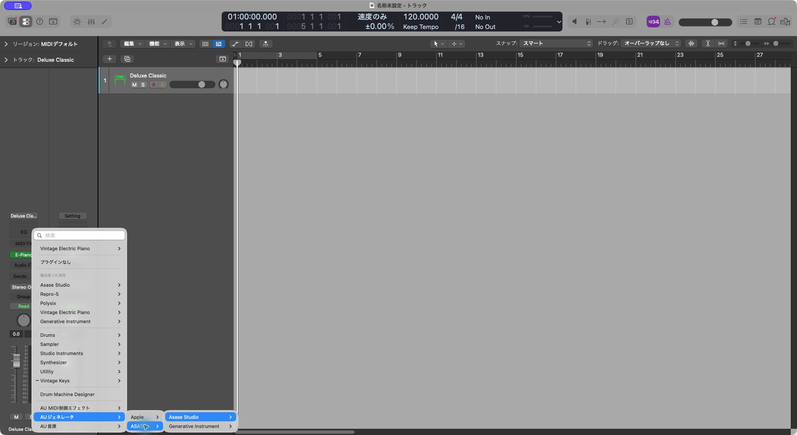
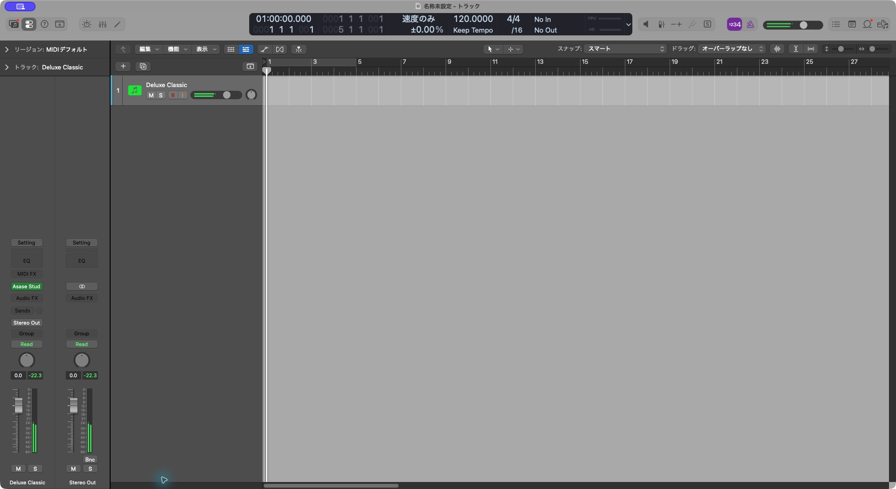
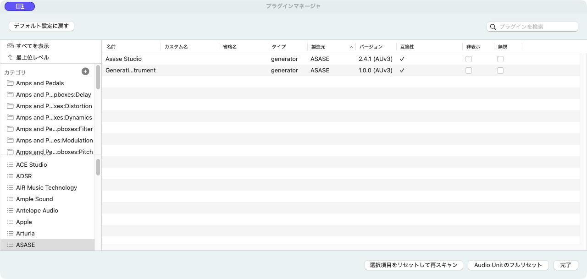

Logic Proで使う
ASASE studio.のMac版には、単体アプリとAUv3音源が入っています。追加のプラグインをダウンロードする必要はありません。
最初の設定
- MacにASASE studio.をインストールし、単体アプリを一度起動します。
- Logic Proを開き、空のプロジェクトで「ソフトウェア音源」トラックを作ります。
- 左のインスペクタにある音源スロットをクリックします。既に別の音源が入っている場合は、スロットの右端をクリックすると選択メニューが出ます。インスペクタが見えなければ
Iキーで表示します。 - AUジェネレータ → ASASE → Asase Studio → ステレオ を選びます。最近使った項目に「Asase Studio」があれば、そこからも選べます。
ASASEは自分で音を作るジェネレーターです。MIDIノートを置かなくても演奏します。ピアノを重ねる場合は、別の音源トラックを作ってください。


見つからないとき
Logic Proを一度終了して開き直してください。続けて「Logic Pro → 設定 → プラグインマネージャ」を開き、メーカー「ASASE」の Asase Studio を探します。名前の横に互換性のチェックが付いているか確認してください。表示されても音源スロットに出ない場合は、対象を選んで「選択項目をリセットして再スキャン」を押します。
同じメーカー名の別プラグインが見える場合があります。選ぶ名前は「Asase Studio」です。

演奏について
ASASEの画面で地形、天気、キー、スケールや音量を調整できます。「Logic / ホストに同期」をオンにすると、Logicの再生位置とテンポに合わせます。設定後はLogicのプロジェクトを保存し、開き直して音と設定が戻るか確認してください。
うまく動かない場合は、サポートへお問い合わせください。Logic ProとmacOSの版数、プラグインマネージャの表示、再現手順を添えてください。